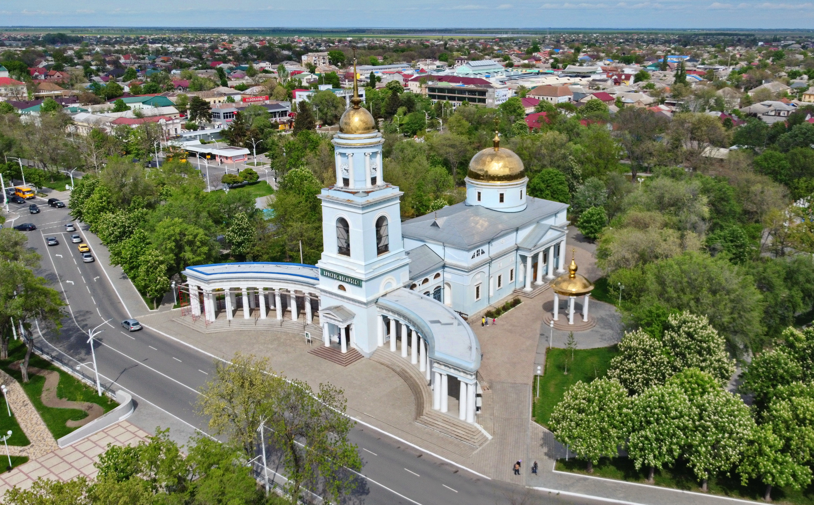

Привіт, я Роман
Проживаю в місті Ізмаїл. Працює на ДТЕК Одеські електромережі фахівцем Час від часу граємо в футбол з колегами, біг та турніки по можливості.
Мої увлеченія
- радіолюбітель
- Спорт
- IT
- Історія
Історія мого міста
Ізмаї́л — місто в Одеській області України, адміністративний центр Ізмаїльського району, колишній центр Ізмаїльської області. Являє собою окрему Ізмаїльську міську громаду. Відстань до Одеси становить понад 200 км і проходить автошляхом E87, із яким збігається М15.
Відомий з IX—X століття у складі Київської Русі. З середини XII століття — під впливом Галицького та Галицько-Волинського князівств. З кінця XIV сторіччя селище під назвою Сміл знаходилось в складі Молдовського князівства. Наприкінці XV сторіччя Сміл захоплено турками. З XVI ст. відбувались неодноразові походи козаків, загонів подільських магнатів під Ізмаїл, Очаків. Під час молдовського походу Северина Наливайка один із козацьких загонів здобув Сміл. Невдовзі турки знову заволоділи селищем і збудували тут фортецю для боротьби проти запорозького війська. Її було названо Ізмаїл. Найбільш відомим став морський похід у 1609 році козаків Петра Сагайдачного, які здобули Ізмаїл, Кілію, Білгород. Штурм Ізмаїла 1790 року У часи російсько-турецьких воєн Ізмаїл (тоді він був відомий вже під такою назвою) був важливою османською фортецею на кордоні Російської та Османської імперій. Однак, перший час Росія не мала претензій на Ізмаїл, і двічі після виграних Російською імперією воєн місто поверталося Османській імперії. Зокрема, під час війни 1768—1774 рр. 5 серпня (26 липня за старим стилем) 1770 року російські війська під командуванням Миколи Репніна взяли фортецю Ізмаїл. Однак, після закінчення війни в 1774 році згідно з умовами Кючук-Кайнарджійського мирного договору фортецю було повернуто Османській імперії. 1789 року Репнін знову намагався взяти місто, але штурм закінчився невдачею. 11 (22) грудня 1790 року фортецю штурмом взяв Олександр Суворов під час Російсько-турецької війни 1787—1791 років. Проте 1791 року за Ясським договором, що ознамену
Архітектура ізраїлю
